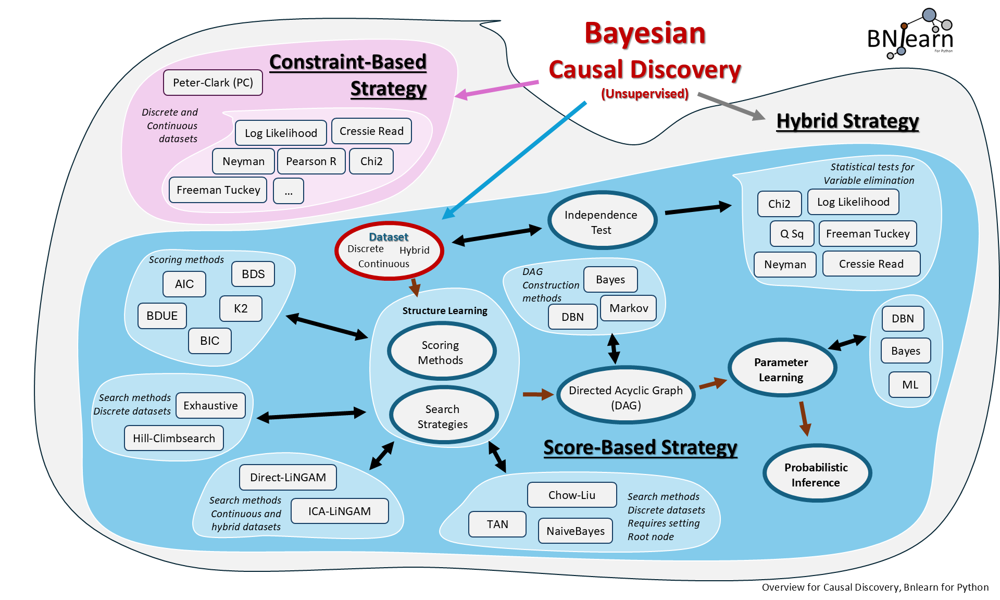

BNLearn’s Documentation


 |
Bnlearn is for causal discovery using in Python!
Contains the most-wanted Bayesian pipelines for Causal Discovery
Simple and intuitive
Focus on structure learning, parameter learning and inference.
Support
Yes! This library is entirely free but it runs on coffee! :)
Tip
Note
Your ❤️ is important to keep maintaining this package. You can support in various ways, have a look at the sponser page. Report bugs, issues and feature extensions at github page.
pip install bnlearn
Contents
Quickstart
Installation
Discretizing
Structure learning
Parameter learning
Continuous Data
Predict
Sampling
Plot
Other functionalities
Examples
Parameters and attributes
- bnlearn.structure_learning
- bnlearn.parameter_learning
- bnlearn.inference
- bnlearn.bnlearn
adjmat2dict()adjmat2vec()check_model()compare_networks()compute_logp()convert_edges_with_time_slice()dag2adjmat()df2onehot()get_edge_properties()get_node_properties()has_valid_time_slice()import_DAG()import_example()impute()independence_test()load()make_DAG()plot()plot_graphviz()predict()print_CPD()query2df()sampling()save()structure_scores()to_bayesiannetwork()to_undirected()topological_sort()vec2adjmat()vec2df()
Documentation